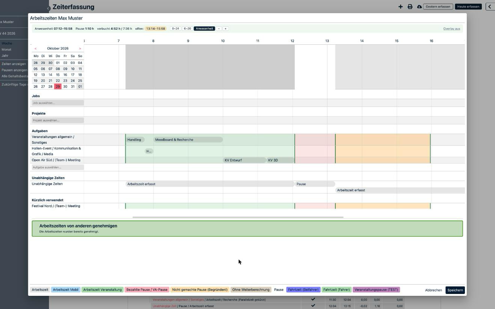
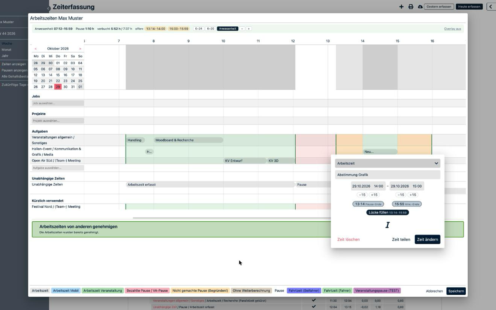
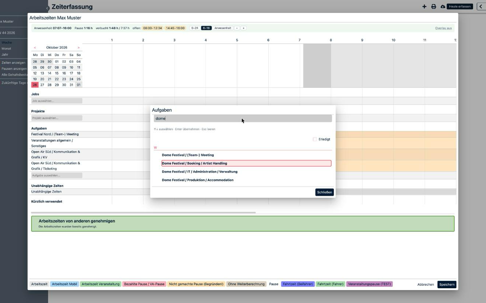

Feld für Feld: „Kopieren“ klicken, im Dashboard ins Feld einfügen (⌘V). Bilder liegen im Finder-Ordner crewbrain-plus/store (Symbol in icons/) – von dort auf die Upload-Felder ziehen.
1 · Store-Eintrag
Beschreibung
Zeiterfassung Plus macht die tägliche Zeiterfassung in CrewBrain schneller und übersichtlicher.
• Anwesenheit im Blick: In der Tagesansicht liegen Anwesenheit (grün), Pausen (rot) und noch nicht verbuchte Zeit (orange) direkt hinter allen Aufgaben-Zeilen. Eine Zusammenfassung zeigt Anwesenheit, Pause, verbuchte Zeit und offene Lücken.
• Zoom: Auf 6–18 Uhr, auf die eigene Anwesenheit oder auf den ganzen Tag. Seitlich scrollen, die Namensspalte bleibt stehen.
• Bündig setzen: Im Bearbeiten-Dialog Start und Ende mit einem Klick an Anwesenheitsbeginn, Pausen oder den vorherigen und nächsten Job anlegen. „Lücke füllen“ setzt einen Job genau in die freie Zeit.
• Bessere Aufgabensuche: Wortteile in beliebiger Reihenfolge über Event, Bereich und Aufgabe, zum Beispiel „arena meet“. Bedienung per Tastatur, zuletzt genutzte Aufgaben als Schnellauswahl.
• „Heute erfassen“: öffnet das Raster für den heutigen Tag mit einem Klick.
Die Erweiterung ändert nur die Darstellung. Gespeichert wird weiterhin ausschließlich über die Schaltflächen von CrewBrain. Es werden keine Daten gesammelt oder übertragen.
Inoffizielles Hilfsprogramm, nicht mit dem Anbieter von CrewBrain verbunden.
Kategorie Produktivität (bzw. „Tools“ / „Workflow & Planung“) · Sprache Deutsch
Grafiken (aus dem Finder ziehen)
Symbol 128 × 128 icons/icon128.png

Screenshot 1

Screenshot 2

Screenshot 3Kleine Werbekachel
2 · Datenschutz
Alleiniger Zweck
Ergänzt die Zeiterfassungsansicht von CrewBrain um Anzeigehilfen (Anwesenheit im Raster, Zoom, Zeitvorschläge, Aufgabensuche), damit Arbeitszeiten schneller erfasst werden können.
Begründung Hostberechtigung
Die Erweiterung blendet ihre Hilfen ausschließlich in die Zeiterfassungsseiten von CrewBrain ein. CrewBrain-Instanzen liegen auf Subdomains wie firma.crewbrain.com, deshalb gilt die Berechtigung für alle Subdomains von crewbrain.com und für keine anderen Seiten.
Remote-Code → „Nein, ich verwende keinen Remote-Code“
Datennutzung → keine Kategorie ankreuzen · unten alle drei Bestätigungen anhaken